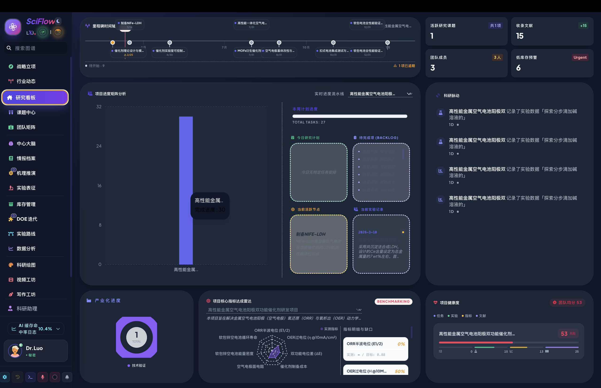
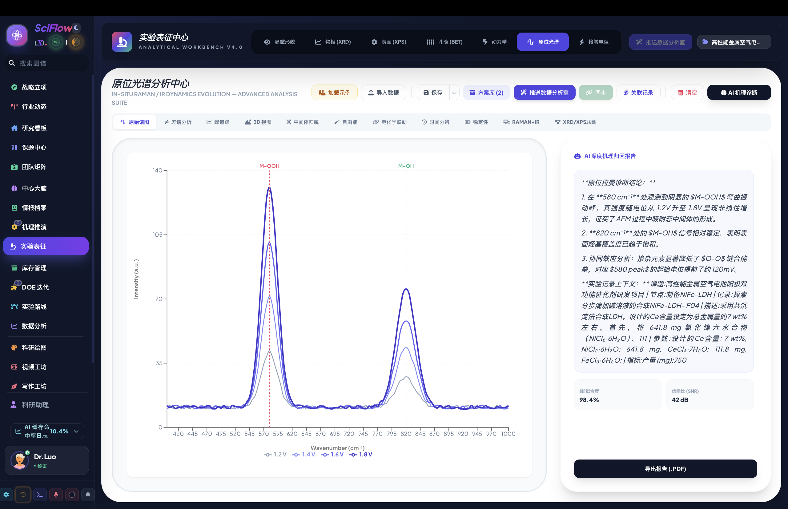
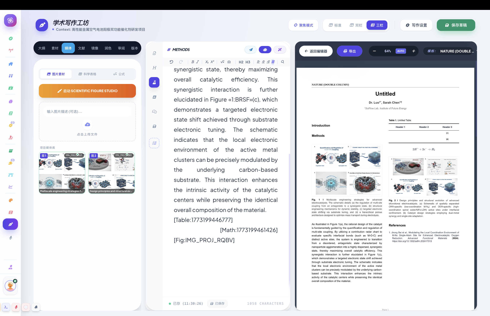
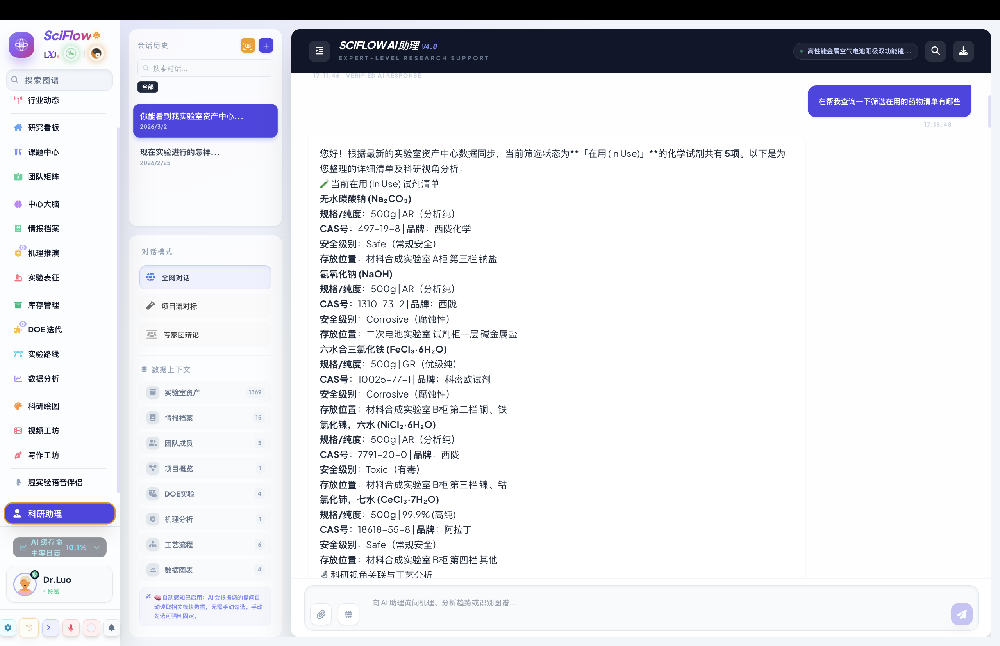

Windows
Windows 10/11 · 64-bitSciFlow Pro 桌面安装程序，适合 Windows 工作站和实验室电脑。
v1.3.0 · Proprietary · All Rights Reserved
面向真实科研流程的本地优先工作站，覆盖课题管理、实验日志、文献知识库、数据分析、科研绘图、写作与 AI 自动化。

国内镜像链接接入 CDN 后会作为主下载入口；GitHub Release 保留为备用下载。
SciFlow Pro 桌面安装程序，适合 Windows 工作站和实验室电脑。
适用于 Apple Silicon Mac 的 DMG 安装包。首次打开如遇系统拦截，请在隐私与安全性中允许。
移动端 APK 安装包，用于移动记录、查看和轻量协作场景。
本版本从单点工具升级为连续推进课题、沉淀实验、分析数据和生成成果的科研工作站。
强化项目看板、任务计划、实验路线、日志和阶段目标之间的连续追踪。
样品、库存、实验日志、表征结果和报告生成之间形成更稳定的回溯链路。
面向 XRD、BET、RDE、图表拼版和科研绘图场景优化分析与展示入口。
改进文献检索、情报档案、知识沉淀和综述写作的协同流程。
围绕通知、周报、规则引擎、写作助手和跨模块工作流强化 AI Agent 能力。
源码仓库私有化，公开页面仅提供说明、截图、安装包和专有授权条款。
截图用于展示软件能力，页面不包含 SciFlow Pro 的源码或前端应用 bundle。

绘图中心
写作工坊
AI 智能助手SciFlow Pro 是专有软件，保留所有权利。下载安装包不代表获得源码授权，也不允许未经授权复制、修改、分发、转售、反向工程或绕过激活机制。